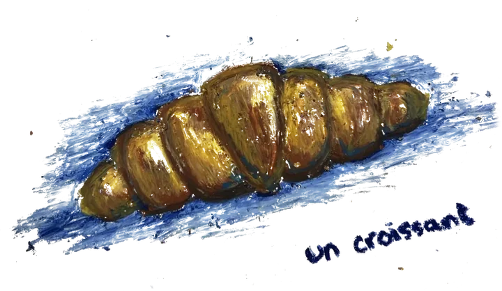
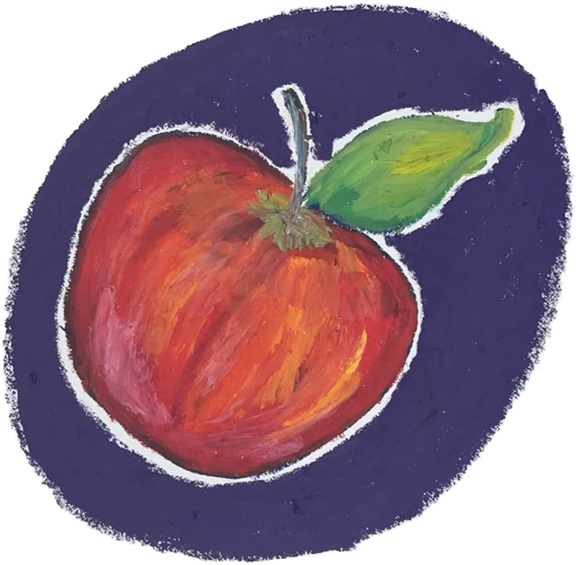

hi! i'm a...
- Data Analyst
- Data Scientist
- Oil Pastel Painter
- Storyteller
- Creative Technologist
- Jack of Many Hobbies
living and working in
northern virginia
Isfar Baset. I build models, explain them in plain English, and paint my breakfast.
Isfar Baset, Data Analyst II at Shift Digital. Master's in Data Science from Georgetown, class of '25. Originally from Dhaka, powered by whatever's in the cup on the right.

Welcome to
Isfar's
kitchen
- machine learning
- data storytelling
- conversational AI
- dashboards & analytics
- plain-English explanations
- oil pastels, weekends only
thank you for stopping by
ISFAR'S
northern virginia
--------------------------------
ORDER #2025--/--/--
--------------------------------
1 MS DATA SCIENCE'25
Georgetown University
1 DATA ANALYST IInow
Shift Digital
--------------------------------
2 Python, SQL, R, Java
1 scikit-learn, PyTorch, XGBoost
1 spaCy, Hugging Face, BERT
1 Spark, Databricks, AWS
1 Plotly, Tableau
1 Black coffeerefill
--------------------------------
TOTALit ships
full resume heretip: hire Isfar

About Isfar
- who?
- Isfar Baset
- what?
- Data Analyst II at Shift Digital
- where?
- Northern Virginia, by way of Dhaka
- studied?
- Data Science & Analytics, Georgetown '25
- why?
- A model nobody understands is just an expensive opinion.
- the usual?
- Black coffee, no notes.
The part of the job I like most is the handoff. Build a model for a real business problem, then explain it well enough that someone without a stats degree can make a decision with it. Off the clock I'm in a café, reading, painting, or ordering something I can't pronounce.
read the resume ↗When I close the laptop, I do things I can't ctrl+Z.
fig. 2 Everything in my sketchbook, plotted. n = 12, r = not significant. Drag them around, I won't take it personally. Tap one to see the original.
also on the calendar
- reading ↗the evidence is on Goodreads
- tennisnew this year, the net is winning
- swimmingthe one hour with no screens
- photography ↗proof I go outside, on Instagram
Want to build something together? Or just trade café recommendations.
The kitchen's open, and I usually reply within a day.